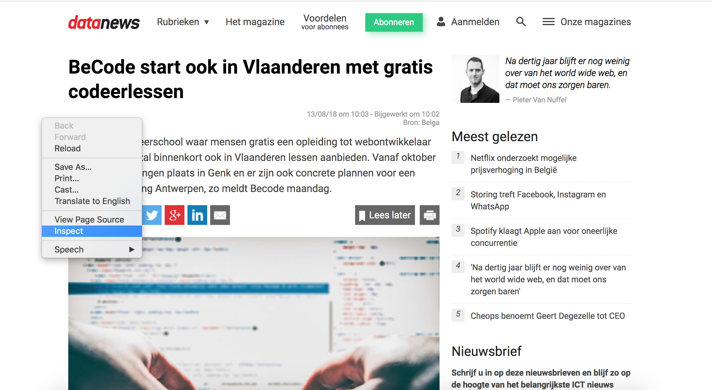
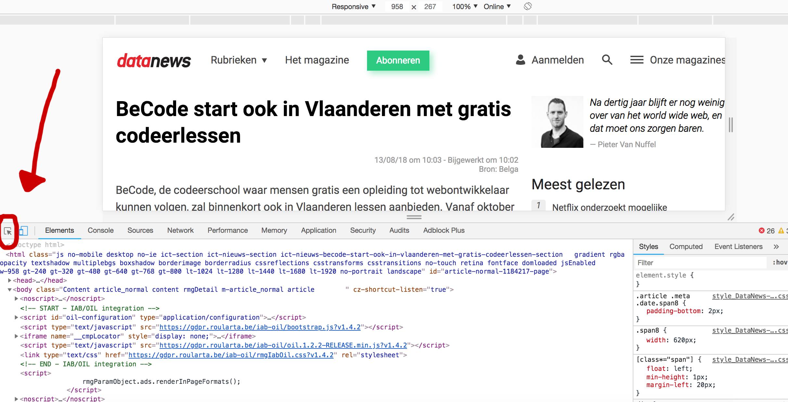
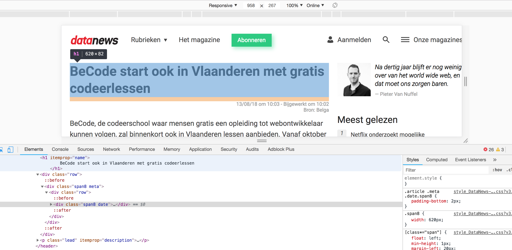
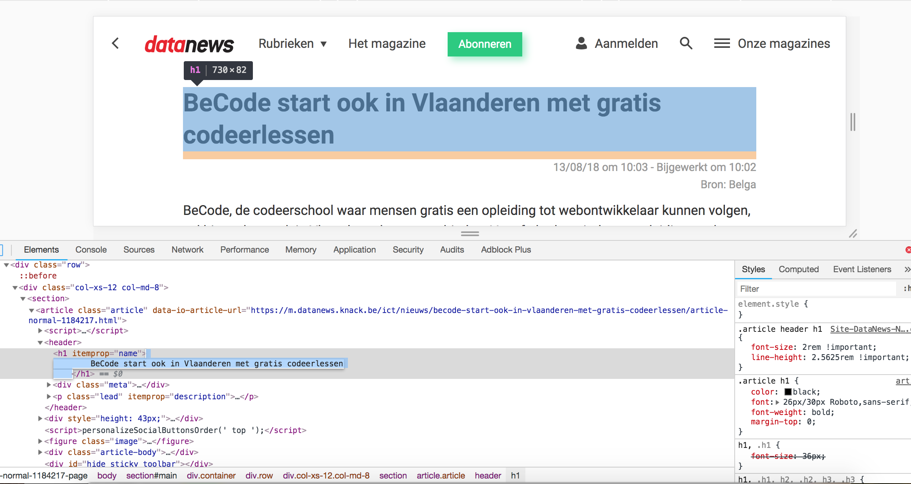
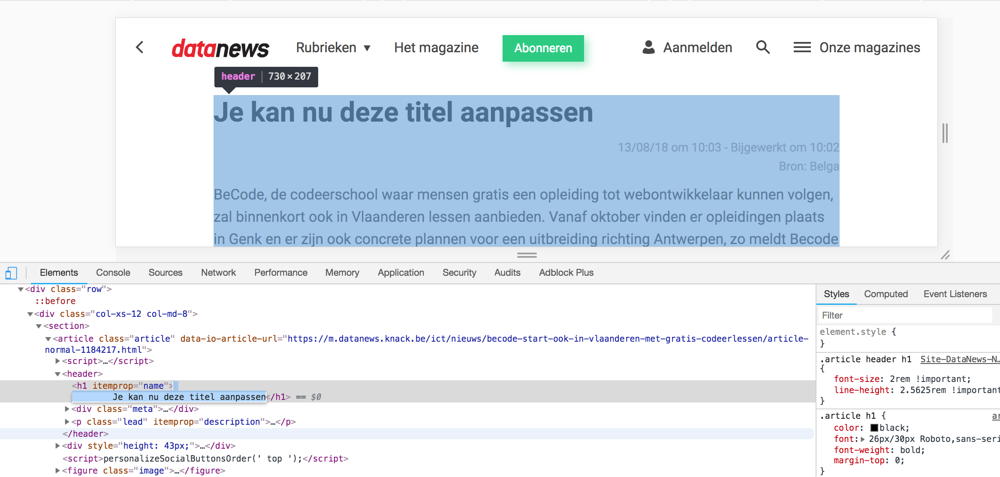

HTML staat voor Hypertext Markup Language en is de standaard "markup taal" voor Web pagina's. Zoals Word-documenten een .doc-extensie hebben of foto's een .jpg-extensie hebben HTML bestanden een .html-extensie. Browsers (bv. Chrome of Mozilla Firefox) kunnen HTML-bestanden interpreteren en weergeven.
Hypertext betekent een tekst met referenties naar andere teksten, bestanden of web pagina's. Deze referenties of links kunnen intern of extern zijn.
Markup taal staat voor een systeem van aantekeningen dat duidelijk te onderscheiden is van de inhoud. In HTML bekomen we dit door te werken met tags. Enkele voorbeelden van dergelijke tags:
Zoals je kan zien zijn er heel wat verschillende tags. Het is niet belanrijk om al deze van buiten te leren. Er zijn immers verschillende overzichten beschikbaar op het internet bv. Mozilla Developer Network (MDN). Het is wel belangrijk te weten welke tag je wanneer dient te gebruiken.
Verder kan het je opvallen dat het merendeel van de tags een opening -en sluitingstags hebben. Toch is dit niet het geval bij alle tags, bv de img-tag.
HTML is 1 van de belangrijkste componenten van webpagina's en functioneert als de inhoud en structuur van een web pagina. We gebruiken het maw om enerzijds de inhoud weer te geven en anderzijds te definiëren wat een hoofding/link/paragraaf/lijst/etc... zijn.
Klik op de rechtermuisknop en selecteer "View Page Source" of "pagina bron weergeven".
Proficiat u heeft net de HTML bekeken waaruit deze pagina bestaat.
De inhoud en structuur van een webpagina schrijven we in HTML. We kunnen de inhoud van verschillende documenten aan elkaar linken en de structuur definiëren we aan met tags.
Klik op je rechtermuisknop en selecteer "inspect" of "inspecteren"
Selecteer het meest linkse icoon in de horizontale balk van de developer tools
Hover nu over de titel (een h1-tag) van de webpagina zelf. Merk op dat dit element nu geselecteerd in de HTML onderaan
In de HTML onderaan kan je nu de inhoud aanpassen.
Schrijf een leuke titel en klik op enter.
Proficiat! Je hebt net het HTML-bestand in je browser aangepast. Nu zou je bijvoorbeeld een screenshot kunnen nemen en dit delen op sociale media.
CSS staat voor Cascading Style Sheets en gebruiken we om web pagina's te stylen. Zoals HTML bestanden een .html-extensie hebben beschikken CSS bestanden over een .css-extensie. CSS laat ons toe elementen in onze HTML-file selecteren en hun weergave te manipuleren. Zo kunnen we bijvoorbeeld een title extra groot maken en een rode kleur geven, aangeven hoeveel ruimte een bepaald element moet innemen, leuke animaties maken en nog veel meer. We selecteren de HTML-elementen met behulp van selectors (die verschillende gradaties van specifiteit hebben).
We kunnen CSS op 3 plekken invoegen
Cascade is Engels voor waterval. CSS-bestanden werken immers op gelijkaardige wijze, met name van boven naar onder. Mochten we nu twee maal definiëren welke kleur een titel moet hebben telt het onderste argument
Naast de ordening is de specifiteit van selectoren van belang. De specifiteit van een selector overschrijft de ordening. Een element zal dus worden weergegeven obv haar meest specifieke selector. Naast de natuurlijke specifiteit van HTML-elementen kunnen we ook een "ID"(#) en/of een "CLASS"(.) meegeven. Waar we een klasse kunnen gebruiken om een groep van HTML-elementen op dezelfde wijze te stylen kunnen we een ID slechts aan 1 enkel HTML toekennen. Een ID is dus specifieker dan een CLASS.
We maken een lijst met drie items die elk een paragraaf bevatten
<ul>
<li>foo</li>
<li class="item">bar</li>
<li id="baz" class="item">baz</li>
</ul>
Selecteer de lijst-items en zet hun font-size op 20px
li {
font-size: 20px;
}
Selecteer de elementen van de klasse .item en zet hun tekstkleur op rood
.item {
color: red;
}
Selecteer het element met ID baz en zet de font-size op 30px en maak het vetgedrukt
#baz {
font-size: 30px;
font-weight: bold;
}
Bezoek de onderstaande links om de HTML van deze pagina in een andere stijl (ander css-bestand) te bekijken. Merk op dat de structuur en inhoud exact hetzelfde zijn dan deze pagina. We hebben enkel de weergave aangepast.
Voorbeeld 1 Voorbeeld 2 Voorbeeld 3 Voorbeeld 4